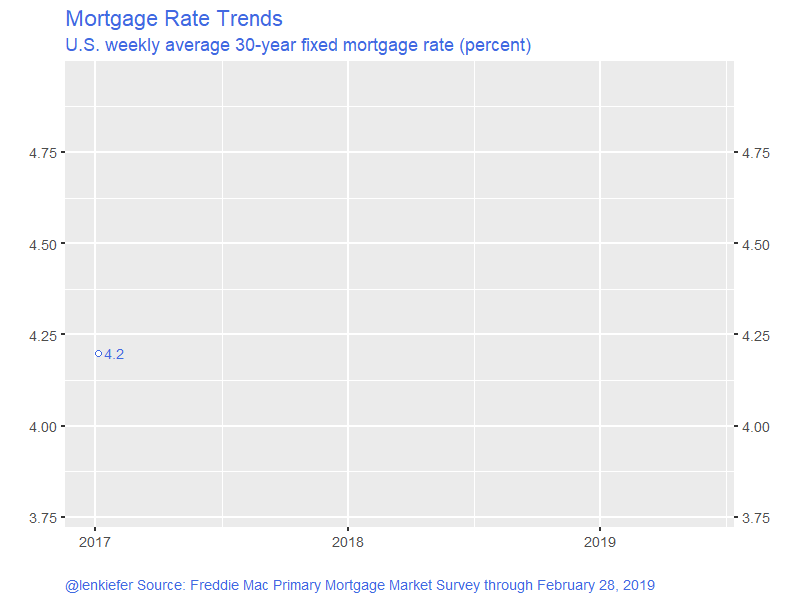
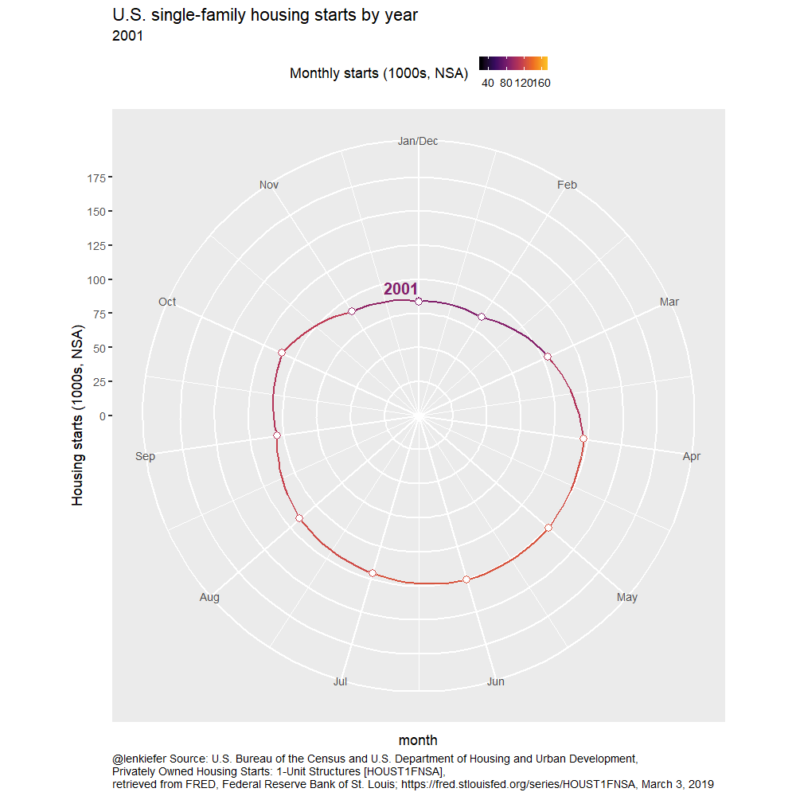
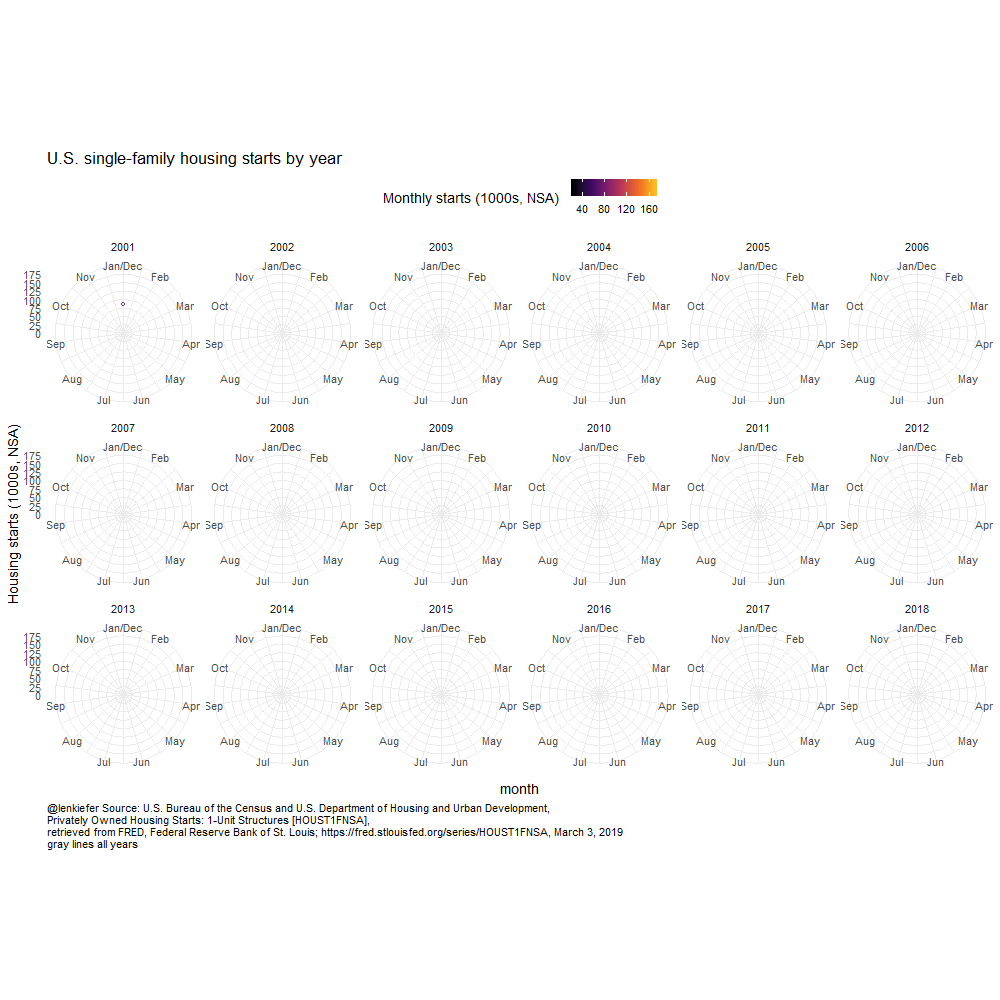

The U.S. housing market stalled out a bit in 2018 and we aren’t building enough homes to match demand. See my recent speech for details on what’s going on. Abbreviated version: in 2018 mortgage interest rates slowed housing activity, but demographic forces support housing demand and should provide a lift in years to come. Together with a recent moderation in mortgage rates there’s reason to be optimistic about housing market activity in 2019.
Let’s make a few graphs to explore. Per usual we will use R. In this post we’ll make some animations using the gganimate package. Also see Go Go Animate! and Animated Labor Force Participation Chart for some additional examples.
Get data
We’re going to get weekly mortgage rates from Freddie Mac’s Primary Mortgage Market Survey and housing construction data from the U.S. Census Bureau’s New Residential Construction.
We could get the data direct from the primary sources, for example as in this post, but for convenience we’ll get the data via the St Louis Fed’s FRED.
Click for R code to wrangle data
library(tidyverse)
library(lubridate)
library(gganimate)
tickers <- c("MORTGAGE30US",
"HOUSTNSA",
"HOUST1FNSA",
"HSN1FNSA",
"COMPUTNSA")
names <- c("30-year Mortgage",
"Housing Starts",
"1-unit Housing Starts",
"New Home Sales",
"Housing Completions"
)
df_names <- data.frame(symbol=tickers,name=names)
# load data ----
df <- tidyquant::tq_get(tickers,
get="economic.data",
from="1960-01-01") %>%
mutate(month=month(date),
monthf=factor(month, labels=month.abb),
year=year(date),
yearc=as.character(year)) %>%
left_join(df_names,by="symbol")Not building enough housing
THe U.S. is not building enough housing. After the 2018 residential construction data was published I tweeted out:
U.S. not building enough #housing
— Leonard Kiefer (@lenkiefer) February 26, 2019
If you look over the 40 years from 1968 to 2007 there were only two years when the U.S. added fewer gross units (homes/apartments/manufactured housing) than it did in 2018 pic.twitter.com/yRsU34iFPd
Let’s recreate this chart
For this chart we will also need annual manufactured home shipments. That data wasn’t in FRED that I could see, but it is available from Census here. I’ve entered the data directly into R via datapasta copy + paste magic.
Click for R code to wrangle data
#data via https://www.census.gov/data/tables/time-series/econ/mhs/shipments.html
# warning! I copied this in by hand, best to review data from Census above is you want to use it!
df_ship <-
data.frame(
year = c(2018, 2017, 2016, 2015, 2014, 2013, 2012, 2011, 2010, 2009,
2008, 2007, 2006, 2005, 2004, 2003, 2002, 2001, 2000, 1999,
1998, 1997, 1996, 1995, 1994, 1993, 1992, 1991, 1990, 1989,
1988, 1987, 1986, 1985, 1984, 1983, 1982, 1981, 1980, 1979,
1978, 1977, 1976, 1975, 1974, 1973, 1972, 1971, 1970, 1969, 1968,
1967, 1966, 1965, 1964, 1963, 1962, 1961, 1960, 1959),
shipments = c(96.6, 92.9, 81.1, 70.5, 64.3, 60.2, 51.6, 51.6, 50, 49.8,
81.9, 95.7, 117.3, 146.8, 130.7, 130.8, 168.5, 193.1, 250.4,
348.1, 373.1, 353.7, 363.3, 339.9, 303.9, 254.3, 210.5,
170.9, 188.3, 198.1, 218.3, 232.8, 244.3, 283.5, 295.4, 295.8,
239.5, 240.9, 221.6, 277.4, 275.7, 265.6, 246.1, 212.7, 338.3,
579.9, 575.9, 491.7, 401.2, 412.7, 318, 240.4, 217.3, 216.5,
191.3, 150.8, 118, 90.2, 103.7, 120.5)
)Now we want to combine this data with annual housing completions (single-family homes and multifamily structures).
# create annual completions data
df_comp <- filter(df, symbol=="COMPUTNSA") %>% group_by(year) %>% summarize(comp=sum(price)) %>%
# join with shipments data
left_join(df_ship, by="year") %>%
mutate(total=comp+shipments)Finally, make our plot.
ggplot(data=df_comp, aes(x=year,y=total, fill=ifelse(total < last(total),"<2018",">=2018")))+
geom_col()+
scale_fill_manual(name="Gross Housing Added ", values= c("#d73027","#4575b4"))+
labs(title="U.S. added fewer gross housing units than in 2018 in only two years prior to 2008",
subtitle="U.S. annual housing completions and manufactured home shipments (thousands)",
caption="@lenkiefer Source: U.S. Census Bureau and Department of Housing and Urban Development, Institute for Building Technology and Safety\ndotted line at 2018 value",
x="",y="")+
scale_x_continuous(breaks=c(1968,1982,1991,2008,2018),expand=c(0.01,0.01))+
scale_y_continuous(sec.axis=dup_axis(),breaks=seq(0,2500,500),limits=c(0,2750),expand=c(0,0.01))+
geom_hline(aes(yintercept=last(total)),linetype=2)+
theme_gray(base_size=14)+
theme(legend.position="top",
plot.title=element_text(face="bold"),
plot.subtitle=element_text(face="italic"),
plot.caption=element_text(hjust=0))
Popular mortgage rate animation
Every week I tweet out this (or a slight variation):
At the end of February 2019, the U.S. weekly average 30-year fixed mortgage was 4.35%, down from 0.59 percentage points from its peak last fall pic.twitter.com/WFVbDvU0Se
— Leonard Kiefer (@lenkiefer) March 3, 2019
Let’s make one.
Static plot
First a static plot, then we will make slight modifications to get the desired animation.
df_rate <- filter(df, symbol=="MORTGAGE30US")
ggplot(data=filter(df_rate,year>2016),
aes(x=date,y=price))+
geom_path(color="royalblue",size=1.05)+
geom_point(data= . %>% tail(1), size=3,color="royalblue",shape=21,fill="white")+
geom_text(data= .%>% tail(1), aes(label=price),nudge_x=8,color="royalblue",hjust=0,size=5)+
scale_x_date(limits=as.Date(c("2017-01-1","2019-05-31"), date_breaks="6 months"))+
scale_y_continuous(sec.axis=dup_axis())+
theme_gray(base_size=12)+
theme(text=element_text(color="royalblue"),
plot.caption=element_text(hjust=0)
)+
labs(x="",y="",
title="Mortgage Rate Trends",
subtitle="U.S. weekly average 30-year fixed mortgage rate (percent)",
caption="@lenkiefer Source: Freddie Mac Primary Mortgage Market Survey through February 28, 2019")
And to animate:
Click for R code to animate
g_rate <-
ggplot(data=filter(df_rate,year>2016),
aes(x=date,y=price))+
geom_path(color="royalblue",size=1.05)+
geom_point(size=3,color="royalblue",shape=21,fill="white")+
geom_text(aes(label=price),nudge_x=8,color="royalblue",hjust=0,size=5)+
scale_x_date(limits=as.Date(c("2017-01-1","2019-05-31"), date_breaks="6 months"))+
transition_reveal(date)+
scale_y_continuous(sec.axis=dup_axis())+
theme_gray(base_size=18)+
theme(text=element_text(color="royalblue"),
plot.caption=element_text(hjust=0)
)+
labs(x="",y="",
title="Mortgage Rate Trends",
subtitle="U.S. weekly average 30-year fixed mortgage rate (percent)",
caption="@lenkiefer Source: Freddie Mac Primary Mortgage Market Survey through February 28, 2019")
animate(g_rate, end_pause=25,nframes=125,width=800,height=600)
anim_save(file="PATH_TO_YOUR_DIRECTORY/pmms_03_03_2019.gif",
animation = last_animation())Yields:

Housing starts animation
Here’s another fun one:
U.S. single-family #housing construction lags historical averages
— Leonard Kiefer (@lenkiefer) March 3, 2019
comparing 1-unit starts by year & month 1960-2018 pic.twitter.com/ZyQe0sFntz
We have the data we need to create this plot.
Click for R code for static plot
df_starts1 <-
filter(df, symbol=="HOUST1FNSA")
# only go from year 2001 forward
g1 <-
ggplot(data=filter(df_starts1,year>2000), aes(x=month, y=price, color=price))+
geom_line(size=1.05)+
geom_point(size=4, shape=21, fill="white",stroke=2)+
scale_color_viridis_c(option="B",end=0.85, name="Monthly starts (1000s, NSA) ")+
geom_text(hjust=1, data=.%>% filter(month==1), nudge_x=-0.25, aes(label=yearc),size=5)+
geom_text(hjust=0, data=.%>% filter(month==12), nudge_x= 0.25, aes(label=yearc),size=5)+
scale_x_continuous(limits=c(0,13),breaks=1:12, labels=month.abb)+
theme_gray(base_size=18)+
theme(legend.position="top")+
theme(plot.caption=element_text(hjust=0,size=rel(0.5)))+
labs(subtitle="{closest_state}",y="Housing starts (1000s, NSA)",
title="U.S. single-family housing starts by year",
caption="@lenkiefer Source: U.S. Bureau of the Census and U.S. Department of Housing and Urban Development,\nPrivately Owned Housing Starts: 1-Unit Structures [HOUST1FNSA],\nretrieved from FRED, Federal Reserve Bank of St. Louis; https://fred.stlouisfed.org/series/HOUST1FNSA, March 3, 2019")Let’s take a look
g1
That doesn’t look good at all! However, it’s like we want it. If we use gganimate::transition_states() we’ll get the desired results:
anim<-
g1+transition_states(year)+shadow_mark(alpha=0.25)
animate(anim, end_pause=25,nframes=125,width=1000,height=800)
anim_save(file="PATH_TO_YOUR_DIRECTORY/starts1_line_anim_mar2019_v4.gif",
animation = last_animation())
Polar plot
Let’s take the same animation, but use polar coordinates to have it wrap around.
Click for R code for animated polar plot
g1b <-
ggplot(data=filter(df_starts1,year>2000), aes(x=month, y=price, color=price))+
geom_line(size=1.05)+
geom_point(size=4, shape=21, fill="white",stroke=1)+
scale_color_viridis_c(option="B",end=0.85, name="Monthly starts (1000s, NSA) ")+
geom_text(hjust=1, data=.%>% filter(month==1), nudge_y=10, aes(label=yearc),size=7,fontface="bold")+
scale_x_continuous(limits=c(1,12),breaks=1:12, labels=month.abb)+
scale_y_continuous(limits=c(0,180),breaks=seq(0,175,25))+
theme_gray(base_size=18)+
theme(legend.position="top",
plot.caption=element_text(hjust=0))
anim<-
g1b+coord_polar()+transition_states(year)+shadow_mark(alpha=0.25)+
labs(subtitle="{closest_state}",y="Housing starts (1000s, NSA)",
title="U.S. single-family housing starts by year",
caption="@lenkiefer Source: U.S. Bureau of the Census and U.S. Department of Housing and Urban Development,\nPrivately Owned Housing Starts: 1-Unit Structures [HOUST1FNSA],\nretrieved from FRED, Federal Reserve Bank of St. Louis; https://fred.stlouisfed.org/series/HOUST1FNSA, March 3, 2019")
animate(anim, end_pause=25,nframes=200,width=1000,height=1000)
anim_save(file="PATH_TO_YOUR_DIRECTORY/starts_anim_mar2019_v3.gif",
animation = last_animation())
I also think a static small multiple is interesting. One strategy I like to use with small multiples is to include grayed out faint lines for all data as a reference in each multiple.
ggplot(data=filter(df_starts1,year>2000), aes(x=month, y=price, color=price))+
scale_color_viridis_c(option="B",end=0.85, name="Monthly starts (1000s, NSA) ")+
scale_x_continuous(limits=c(1,12),breaks=1:12, labels=month.abb)+
scale_y_continuous(limits=c(0,180),breaks=seq(0,175,25))+
theme_minimal(base_size=12)+
theme(legend.position="top",
plot.caption=element_text(hjust=0))+
labs(y="Housing starts (1000s, NSA)",
title="U.S. single-family housing starts by year",
caption="@lenkiefer Source: U.S. Bureau of the Census and U.S. Department of Housing and Urban Development,\nPrivately Owned Housing Starts: 1-Unit Structures [HOUST1FNSA],\nretrieved from FRED, Federal Reserve Bank of St. Louis; https://fred.stlouisfed.org/series/HOUST1FNSA, March 3, 2019\ngray lines all years")+
# drop the facet variable (setting NULL) and to include grayed out shadows in each facet
geom_path(data= . %>% mutate(yearc=NULL), color="darkgray",linetype=1,alpha=0.5, aes(group=year))+
facet_wrap(~yearc,ncol=6)+
geom_line(size=1.05)+
geom_point(size=1, shape=21, fill="white",stroke=1)+
coord_polar()
We could think about animating that, but that might be getting a little intense and overdoing it.
Eh, let’s go for it!
g_sm<-
ggplot(data=filter(df_starts1,year>2000), aes(x=month, y=price, color=price))+
scale_color_viridis_c(option="B",end=0.85, name="Monthly starts (1000s, NSA) ")+
scale_x_continuous(limits=c(1,12),breaks=1:12, labels=month.abb)+
scale_y_continuous(limits=c(0,180),breaks=seq(0,175,25))+
theme_minimal(base_size=14)+
theme(legend.position="top",
plot.caption=element_text(hjust=0))+
labs(
y="Housing starts (1000s, NSA)",
title="U.S. single-family housing starts by year",
caption="@lenkiefer Source: U.S. Bureau of the Census and U.S. Department of Housing and Urban Development,\nPrivately Owned Housing Starts: 1-Unit Structures [HOUST1FNSA],\nretrieved from FRED, Federal Reserve Bank of St. Louis; https://fred.stlouisfed.org/series/HOUST1FNSA, March 3, 2019\ngray lines all years")+
geom_path(data= . %>% mutate(yearc=NULL), color="darkgray",linetype=1,alpha=0.5, aes(group=year))+
facet_wrap(~yearc,ncol=6)+
geom_line(size=1.05)+
geom_point(size=1, shape=21, fill="white",stroke=1)+
coord_polar()
animate(g_sm+transition_reveal(date), end_pause=25,nframes=200,width=1000,height=1000)
anim_save(file="PATH_TO_YOUR_DIRECTORY/polar_sm.gif",
animation = last_animation())
Alternative version
I’ve found a small issue with gganimate (not sure if it’s an actual issue or just my misunderstanding). With transition_states() you tend to end the animation back at the first observation. Notice the line plot above snaps back to 2001. I want to emphasize 2018, so I found a workaround:
# add back 2018, but set year to 18 so it shows up first
df_starts2 <-bind_rows(df_starts1, filter(df_starts1, year==2018) %>% mutate(year=18))
# proceed as above
g3 <-
ggplot(data=filter(df_starts2), aes(x=month, y=price, color=price))+
geom_line(size=1.05)+
geom_point(size=4, shape=21, fill="white",stroke=2)+
scale_color_viridis_c(option="B",end=0.85, name="Monthly starts (1000s, NSA) ")+
geom_text(hjust=1, data=.%>% filter(month==1), nudge_x=-0.25, aes(label=yearc),size=5)+
geom_text(hjust=0, data=.%>% filter(month==12), nudge_x= 0.25, aes(label=yearc),size=5)+
scale_x_continuous(limits=c(0,13),breaks=1:12, labels=month.abb)+
theme_gray(base_size=18)+
theme(legend.position="top")
anim3 <-
g3+transition_states(year)+shadow_mark(alpha=0.25)+
theme(plot.caption=element_text(hjust=0))+
labs(subtitle="{closest_state}",y="Housing starts (1000s, NSA)",
title="U.S. single-family housing starts by year",
caption="@lenkiefer Source: U.S. Bureau of the Census and U.S. Department of Housing and Urban Development,\nPrivately Owned Housing Starts: 1-Unit Structures [HOUST1FNSA],\nretrieved from FRED, Federal Reserve Bank of St. Louis; https://fred.stlouisfed.org/series/HOUST1FNSA, March 3, 2019")
animate(anim3, end_pause=25,nframes=350,width=1000,height=800)
anim_save(file="PATH_TO_YOUR_DIRECTORY/starts1_line_anim_mar2019_v5_long.gif",
animation = last_animation())
Update
Turns out it may just be me. Thomas Lin Pedersen pointed out that you can skip this business in the last example by setting WRAP=FALSE. However, when I applied it to the example above, I got an error if I run this.
g3+transition_states(year,transition_length=1, state_length=1, wrap=FALSE)wrap=FALSE does seem to work in simpler animations, so I’m not sure what exactly causes this error. If I can figure out a minimal reprex I may file an issue, but for now I’ll used my workaround above. But for you own application using wrap=FALSE may be a good solution.